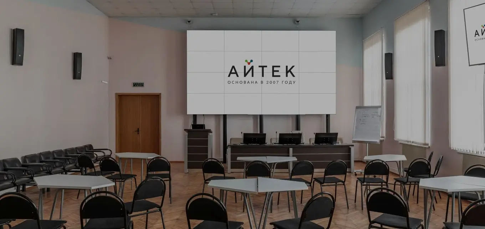

Федеральный исследовательский центр
Апатиты · 60 рабочих дней
Комплексное оснащение конференц-зала в городе Москва

Стоимость и срок указаны для этого объекта. Смета нового проекта зависит от помещения, комплектации и состава работ.
Департамент образования и науки города Москвы ставит перед ГК Айтек задачу по комплексному оснащению конференц-зала мультимедийным оборудованием. Требуется создать современную и функциональную среду, обеспечивающую эффективное проведение конференций, презентационных сессий и видеосеансов. Департамент, уделяя приоритетное внимание качеству образовательного процесса, предъявляет повышенные требования к техническому оснащению своих учреждений, поэтому все предлагаемые решения должны соответствовать высоким стандартам надёжности, универсальности и простоты использования, а также быть интегрируемыми в существующую инфраструктуру без ущерба для рабочего процесса.
Специалистами ГК Айтек был успешно завершён проект по комплексному оснащению объекта современным мультимедийным оборудованием под ключ. В ходе реализации проекта был произведён весь спектр работ — от поставки оборудования и разработки проектной документации до финальной отладки систем. Состав реализованного комплекса: Видеостена 4х4, состоящая из 16 тонкошовных панелей 55" Индивидуальные дублирующие мониторы 24" для президиума Интерактивная трибуна для выступлений спикера Звуковые настенные колонны Конференц-система для интерактивного взаимодействия во время семинаров и групповых сессий Камеры захвата с умным наведением на активного спикера Централизованное управление всем оборудованием с единого пульта
В рамках данного проекта силами компании Айтек были осуществлены все необходимые работы по проектированию, монтажу и пусконаладке оборудования для конференц-зала Департамента образования и науки города Москвы. Проведя всесторонний анализ поставленной задачи и разработав комплект рабочей документации, инженеры компании Айтек реализовали комплекс, состоящий из мультимедийного оборудования:
Видеостена общими габаритами 5 х 2,8 м, состоящая из 16-и профессиональных дисплеев диагональю 55” каждая. Видеостена предназачена для демонстрации основного видеоконтента всем присутствующим в зале. Для дублирования контента, демонстрируемого на видеостене, на столе президиума расположены 3 монитора диагональю 22”, смонтированных для удобства использования на наклонных подставках.
Интерактивная трибуна для выступлений оборудована сенсорным монитором диагональю 23 дюйма, компактным ПК, интегрированным в корпус трибуны, а также микрофонами на “гусиной шее”. Для удобства пользователя USB-порты ПК выведены в специальный лючок, установленный на столешнице трибуны. Благодаря этому, выступающий может самостоятельно запускать и управлять воспроизведением материалов с USB-накопителя или из сети, используя сенсорный монитор для удобного управления.
Конференц-система обеспечивает удобство и порядок в ходе дискуссий. На каждом рабочем месте в президиуме расположены настольные микрофонные пульты. Микрофон активируется нажатием кнопки на пульте, а также может быть включен голосом. Система позволяет настроить приоритет микрофонов: при включении одного или нескольких микрофонов, остальные автоматически блокируются, исключая помехи и “шум” во время дискуссии. Пульт председателя, установленный на столе президиума, имеет приоритет и может быть включен в любой момент, отключая при этом остальные микрофоны.
Радиомикрофоны, расположенные в зале, позволяют зрителям активно участвовать в дискуссии или задавать вопросы. Звук распространяется по залу с помощью 8-ми акустических систем, установленных на стенах. Матричный аудиомикшер с необходимым количеством входов и выходов, обеспечиваемых платами расширения, обеспечивает коммутацию и обработку звука.
4 поворотные видеокамеры (PTZ) обеспечивают качественную трансляцию изображения выступающего крупным планом или общий вид зала во время видеоконференций. Управление камерами осуществляется оператором с помощью специализированного пульта с джойстиком, расположенного на его рабочем месте.
Для проведения видеоконференций используется специализированное программное обеспечение, такое как Skype, Zoom и другие, установленное на мультимедийном ПК. Запись и трансляция мероприятий осуществляется с помощью программы OBS Studio.
Система коммутации цифрового видеосигнала (HDMI) основана на матричном коммутаторе, обеспечивая бесперебойное переключение изображения на видеостену и дублирующие мониторы президиума и стола переговоров. Для плавного масштабирования изображения используется видеомасштабатор, который позволяет демонстрировать контент с разрешением 4K на видеостене.
Управление мультимедийным комплексом осуществляется оператором с помощью планшетного компьютера. Специально разработанный пользовательский интерфейс обеспечивает интуитивное управление системой: включение/выключение, выбор режима работ и т.д.
С помощью этого же интерфейса можно управлять освещением, включать/выключать независимо две группы светильников: люстру и бра, а также потолочные точечные светильники.
В бриф перейдут выбранный проект, тип помещения и бюджет примера. Все параметры можно изменить.